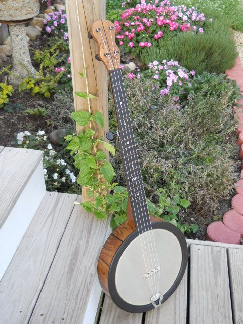
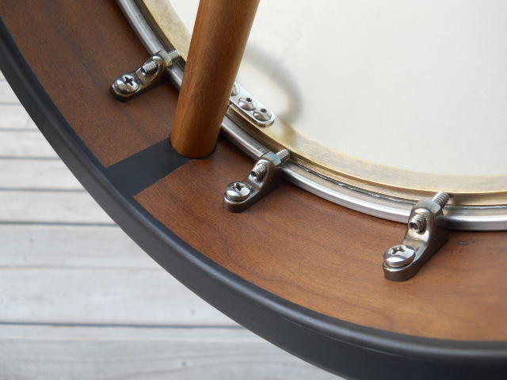
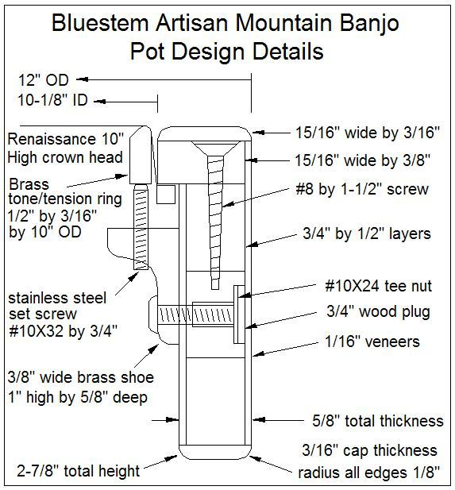
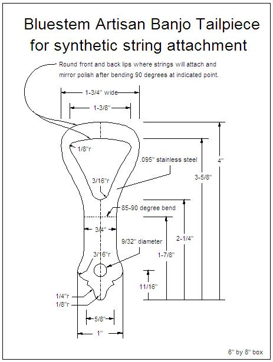

Select your area of interest:
Home* Lap Steel* 3 String Guitar* "Regular" Guitar* Violin* Bass*
Banjo* Mandolin* Ukulele* Home Recording* Woodworking* Links
Traditional & Progressive Open Back Banjo Design & Construction Information
Open Back Banjo Design Primer
General Banjo Construction Information
Open Back Banjo Setup Guide
“Why can’t I get this thing to play in tune?” (a "simple" explanation of equal temperament)
Frank Profitt Mountain Banjo(Free complete Profitt-style plan available as printable pdf!)
Bluestem Artisan Mountain Banjo
Bluestem Mountain Banjo Nouveau(Free plan available as printable pdf!)
Bluestem Open Back Banjo Nouveau(Free plan available as printable pdf!)
Bluestem Wine Box / Hand Drum Banjo(FREE full-size plans as multi-page printable pdfs!)
Boucher Early Minstrel Banjo (construction guide on CD & full size plan available)
Bluestem Open Back Banjo (construction guide on CD & full size plan available)
Bluestem Workingpersons 11 Slot Head Open Back Banjo (construction guide on CD & full size plan available)
Bluestem Wood Top Banjo Information (full size plan available)
Bluestem Backstep Banjos; What I personally play...
*****************************************
Bluestem Artisan Mountain Banjo
*****************************************
A quick Youtube demo:

Bluestem Artisan Mountain Banjo features:
I really like the feel and vibe of the minimalist style of the mountain banjo, so this iteration was done as a way of incorporating an internal bracket shoe system. This design opens the back completely and the internally mounted brass shoes are both handsome and functional as a way of conveniently tensioning the head.
- 1/2” block rim with additional 1/16" outer layer of spalted maple and 1/16" inner layer of cherry
- Ebony top and rear rim caps
- Internal head tensioning system to eliminate uncomfortable external hardware
- 10" Renaissance head is held within the 12" diameter 2-7/8" deep rim
- Internally mounted patina finished raw brass shoes are used to hold the tensioning screws
- Solid brass 1/2" by 3/16" tension/tone ring
- 24-1/2" scale 17 fret board with mother of pearl position markers
- Ogee fret board scoop with partial 16th and 17th frets
- Small side position markers
- Seventeen inlaid maple flush frets
- 1-3/8" neck width at nut for playing comfort
- Pegheds violin style 4:1 planetary tuners
- Hand cut and polished stainless steel string anchor to tie Nylgut strings
- Single neck attachment bolt housed within dowel rod for solid neck to pot connection
- Easy string height adjustment by loosening the single attachment bolt and sliding neck heel up or down
- Comfortable total weight of approximately 5 pounds
Pot assembly:
The pot assembly departs radically from the standard traditional design. The protruding hardware has been eliminated and the pot in tensioned by means of internally mounted brass shoes and tensioning screws. The head can be replaced by slacking the head tension and removing the internal brass shoes. Although the pot is a little larger diameter than the specified head size, it is quite comfortable to play without the protruding tension band, hooks, shoes, or nuts as found on a conventional open back banjo.
The design is very much like the open back Nouveau, so the open back Nouveau plan and the additional photos shown below should be all that is needed if you wish to duplicate the instrument. There are many more photos, construction drawings, and a raw brass bracket fabrication guide for this banjo on my photos page at BanjoHangout.org. My home page is accessable if you search for my member name, "Rudy".



Neck:
The neck is somewhat traditional in feel, while the Pegheds 4:1 planetary violin style tuners provide ease of tuning. A high tensile strength 2024-T4 aluminum tapered reinforcement bar ensures that the neck will retain excellent playing action without the need for periodic or seasonal adjustment.
Armrest:
The rounded ebony overlay at the top edge of the pot does double duty as a comfortable arm rest since there is no sharp edged tension band to cut into your arm.
Tailpiece:
The tailpiece is hand cut and polished stainless steel. Synthetic strings are tied to the open loop protruding over the head.
*****************************************